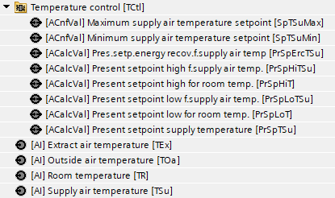
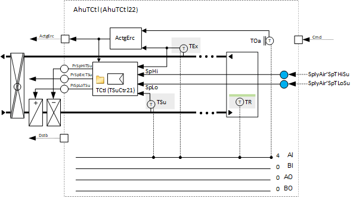
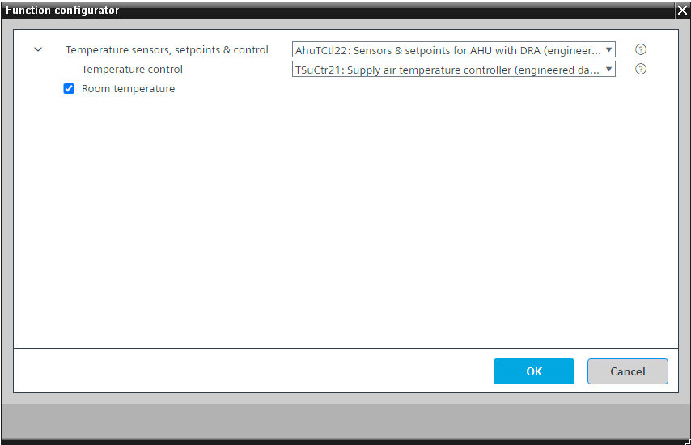

[AhuTCtl22] 带有 DRA 的空气处理机组的传感器、设定值和温度控制
Program block, name / node subtype: [AhuTCtl22] Sensors, setpoints and temperature control for air handling unit with DRA
Library hierarchy: Ventilation and air conditioning equipment
Family: AhuTCtl
项目树 | 图表 |
|---|---|
|
 |  |
Configurator


程序块存储在没有 I/Os. 的库中 使用auto-create and auto-connect函数创建 I/Os 和 /or 将它们连接到接口块，例如 R_A、CMD_B。或者，从包含库中预定义 I/Os 的文件夹中取出 I/Os，并从工厂中取出 /or，并将它们连接到接口块。
Mandatory elements
姓名 | 描述 | 类型 | 报警/通知类 | 趋势/类型 |
|---|---|---|---|---|
|
TCtl | Temperature control | N/A | N/A | |
TEx | Extract air temperature | AI：模拟输入 | No | 是的，3 |
TOa | Outside air temperature | AI：模拟输入 | No | 是的，3 |
TSu | Supply air temperature | AI：模拟输入 | No | 是的，1 |